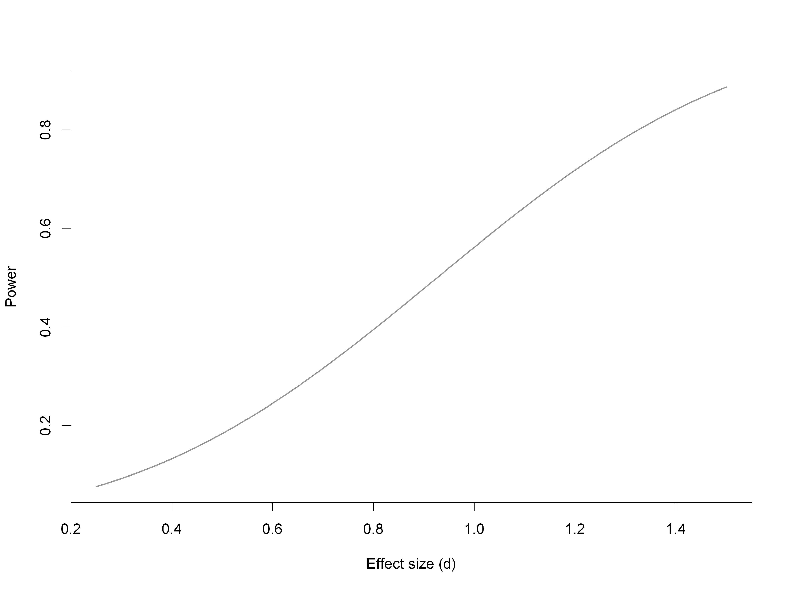
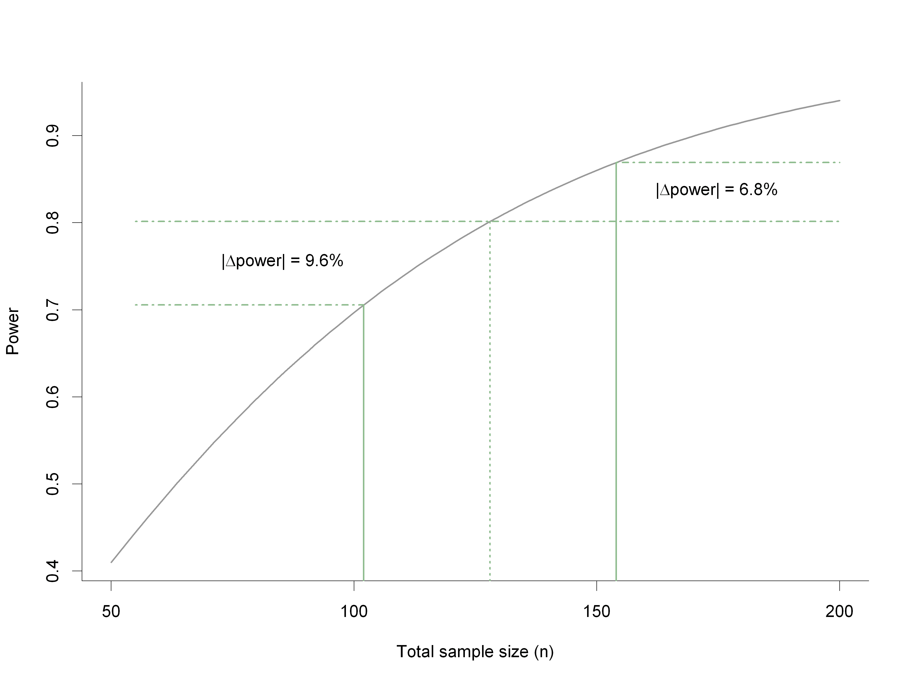
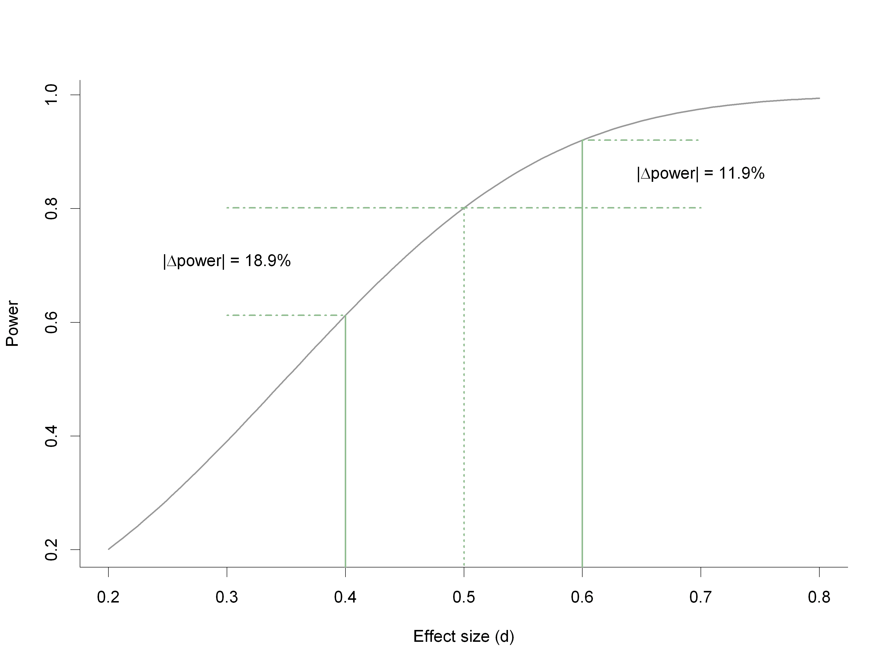
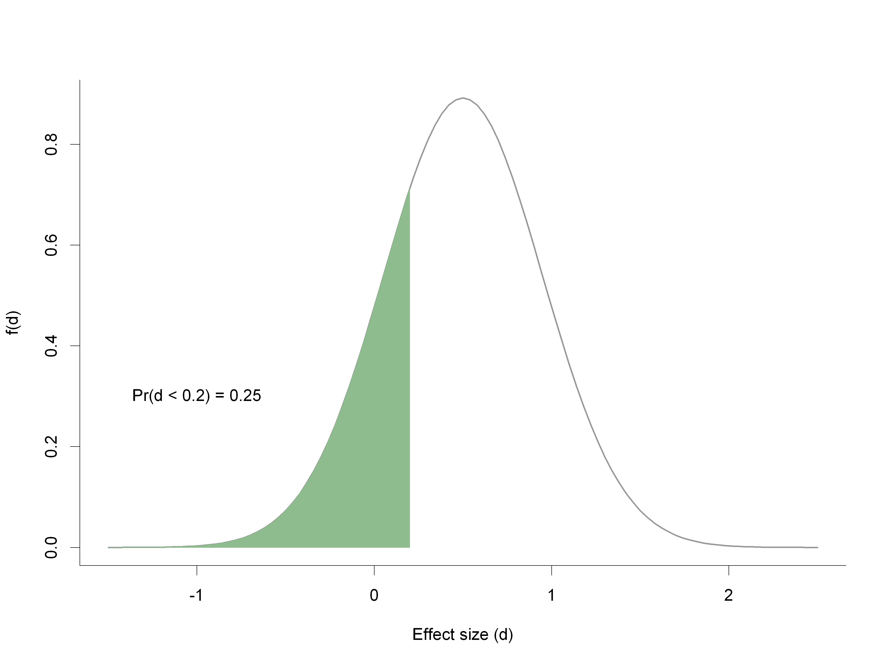

Pilot Studies
(What they are, and what they aren't)
Steve Lane
stephen.lane 'at' barwonhealth.org.au
Barwon Health Biostatistics Unit
- This talk was motivated by a 'robust' discussion in RRC
- Something that is generally misunderstood, primarily due to a lack of knowledge surrounding power/sample size issues.
tl;dr
Pilot (feasibility, proof of concept) studies are:
- Studies designed to test the feasibility of the methods and procedures to be used in the larger study
Pilot studies are not:
- Studies for which available funding limits the number of participants
- Studies that test hypotheses
- Studies that estimate differences between groups (effect sizes) for use in sample size calculations
Outline
Regulatory statements
Note for guidance on GCP (CPMP/ICH/135/95, TGA)
Clinical trials should be scientifically sound, and described in a clear, detailed protocol
- Item 2.5, $\S$2, `The principles of ICH GCP'
General considerations for clinical trials (ICH E8)
Clinical trials should be designed, conducted and analysed according to sound scientific principles to achieve their objectives; and should be reported appropriately.
- $\S$2.2, `Scientific approach in design and analysis'
Australian code for the responsible conduct of research
Researchers must foster and maintain a research environment of intellectual honesty and integrity, and scholarly and scientific rigour. Researchers must:
- \(\cdots\)
- adopt methods appropriate for achieving the aims of each research proposal
\(\cdots\)
- $\S$1.6, `Maintain high standards of responsible research'
National statement on ethical conduct in human research ($\S$3.3.3)
Researchers should show that:
- the research is directed to answering a specific question or questions;
- there is a scientifically valid hypothesis being tested that offers a realistic possibility that the interventions being studied will be at least as beneficial overall as standard treatment, taking into account effectiveness, burdens, costs and risks;
- the size and profile of the sample to be recruited is adequate to answer the research question; and
- the research meets the relevant requirements of the CPMP/ICH Note for Guidance on Good Clinical Practice (CPMP/ICH-135/95), ISO 14155 Clinical Investigation of Medical Devices, and the TGA.
Institution responsibilities
It is important that institutions provide induction, formal training and continuing education for all research staff, including research trainees. Training should cover research methods, ethics, confidentiality, data storage and records retention, as well as regulation and governance.
- $\S$1.3, `Train staff', Australian code
Institutions must see that any human research they conduct or for which they are responsible is: designed and conducted in accordance with the Australian code for the responsible conduct of research
- $\S$5.5.1(a), `Research governance', National statement
Pilot studies: what they aren't
Commonly used rationales
I can only get a small number of participants
I did a similar study a couple of years ago and it got published
[Author name] published a study with only 10 participants, we're going to get 20!
It's only a student project
It's low risk
My funding doesn't cover extending timelines/multi-centre studies
My supervisor told me to run it as a pilot
A common theme
Sample sizes are too small
--- and ---
testing of hypotheses is proposed in the study protocol
Resulting in a severe lack of power (in most cases)
Power example
- Fixed \(n = 20\) (\(10\) per group), testing the difference between means

Power example (cont'd.)
- Fixed \(\delta = 0.5\), \(n\) varies by \(\pm20\%\)

Sample size estimation
Pilot studies are often used to estimate the sample size for the full study
- This is incorrect if performed `blindly'
For a two-sample difference in means, the effect size \(\delta\) is
\[\begin{aligned} \delta & = \frac{\mu_{1} - \mu_{2}}{\sigma} \end{aligned}\]
with the sample size (per group):
\[\begin{aligned} n_{1} & = n_{2} = n \geq 2(z_{1-\alpha/2} + z_{1-\beta})^{2} \times \left( \frac{\sigma}{\mu_{1} - \mu_{2}} \right)^{2} \end{aligned}\]
Sample size estimation (cont'd.)
The issue is that the effect size is itself unknown, and hence needs to be estimated; it has variance:
\[\begin{aligned} \text{Var}(\hat{\delta}) & \approx \frac{2}{n} \end{aligned}\]
Example: \(\hat{\delta} = 0.50\), \(n_{1} = n_{2} = n = 10\) ;
\[\begin{aligned} 95\% \text{ CI } (\delta) & : (-0.39, 1.39) \end{aligned}\]
Power and effect size
- Fixed \(n = 64\), \(\delta\) varies by \(\pm20\%\)

The poorly productive pilot cycle
Errors in decision making
- Continue to full study if the point estimate \(d > 0\)

Errors in decision making
- Continue to full study if the point estimate \(d > 0.1\)

Errors in decision making
- Continue to full study if the point estimate \(d > 0.2\)

Errors in decision making (cont'd.)
This leads to bias in the expected effect size
- I.e. the expected effect size is larger than the true effect size
\(\Rightarrow\) Sample sizes are smaller for the main study
Pilot studies: what they are
What they are
Studies designed to test the feasibility of the methods and procedures to be used in the larger study
- Recruitment rates
- Retention rates
- Compliance
- Assessment time
- Time to fill out forms
- Data issues
- Willingness to be randomised
What they are (cont'd.)
Part of a bigger research project
There should be clear decision criteria surrounding:
- When the project is abandoned
- What will be the key decision points for change
Sample size requirements of a pilot study
Sample size of a pilot study should not be neglected
It should be sufficient to estimate key feasibility parameters
- This can be done so that a margin of error is guaranteed:
- For example, to estimate a proportion to within \(\pm 0.2\) with \(95\%\) confidence, (at most) 24 participants would be required
Alternatives/extensions of pilot studies
Internal pilot studies
Advantage:
- Forms part of the main study\ (we can use the `pilot' participants in the final analysis)
Disadvantage:
- Forms part of the main study\ (we can't make other adaptations)
Restricted design
Only allows upwards revision of sample size
If \(n_{0}\) denotes the original planned sample size and \(\hat{n}\) denotes the revised sample size from the internal pilot of \(n_{1}\) participants, then:
\[\begin{aligned} n_{2} & = \max \left\{n_{0}, \hat{n}\right\} - n_{1} \end{aligned}\]
denotes the extra participants required in the second stage
Issues with the restricted design
Blinding/masking
E.g. a \(t\)-test requires calculation of the pooled variance:
\[\begin{aligned} S^{2} & = \frac{(n_{11} - 1)S_{11}^{2} + (n_{12} - 1)S_{12}^{2}}{n_{11} + n_{12} - 2} \end{aligned}\]
where \(n_{1i}\) and \(S_{1i}\) are the sample size and sample standard deviation after the pilot stage in group \(i\)
A DSMB is then needed to run the unblinded calculations
- Prefer a blinded assessment (no DSMB needed)
- Use a `lumped' variance
Effect on Type I error[1]
- Generally small for superiority trials
- Should demonstrate possible effects in the protocol
Trials with efficacy monitoring
Can include both IPS and efficacy/futility monitoring
Advantage:
- Sample size adjustment
- Early stopping (saving participants/resources)
Disadvantage:
- Complex
- DSMB required
Trials with efficacy monitoring (cont'd.)
A multitude of possible designs
If including IPS, probably easiest to perform this before efficacy monitoring
E.g. plan IPS at \(1/3n\), and efficacy monitoring at \(1/2n, 3/4n\)
- Initial sample size based on the interim monitoring schedule
- But, monitoring times and boundaries updated after sample size adjustment
Final thoughts
Don't be naive!
- Don't use point estimates for decisions
- Don't base continuance decisions on effect sizes
Inform participants in the PICF of the pilot nature of the trial
- c.f. $\S$2.2 and 3.3 of the National Statement
Make decision points explicit in the trial protocol
- e.g. under what circumstances will the main trial not proceed
Publish!
- It is important to inform the scientific community about the feasibility of your trial
- Pre-publication and post-publication peer review
[1]: Occurs with any study involving interim analyses
Read-And-Delete
- Edit YAML front matter
- Write using R Markdown
- Use an empty line followed by three dashes to separate slides!
What if I don't use the 3 dashes?
Slide 2
- Testing whether I can get my speaker notes sorted out
- Doesn't understand my speaker notes? \begin{align} a & = b \end{align}
- This is a test
- Another test
Slide 3
- Go again! \begin{align} a & = b \end{align}
Slide 4
- Lower hierarchy
Slide 5
- Going down?